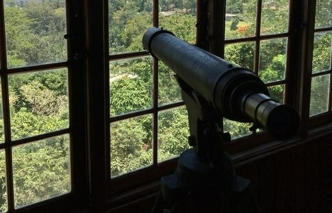
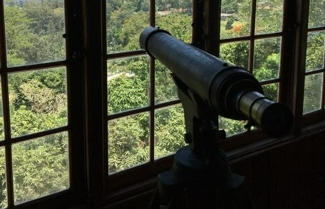

The Hatane Tea Factory was built in 1925, and it is now home to the Ceylon Tea Museum, which is located about four kilometres south of Kandy. Before Clifford Ratwatte, the Chairman of the Sri Lanka Tea Board, merged the Ceylon Tea Museum inside the tea industry in 1998, it had been abandoned for more than ten years. The building was renovated for its new purpose as a museum, and on December 1st, 2001, it was formally opened to the public with the help of the Tea Board and the Planters' Association of Sri Lanka.The Ceylon Tea Museum features displays on early figures in the Sri Lankan tea industry, such as Thomas Lipton, a fellow Scotsman who made Ceylon tea and sold it to Western markets beginning in 1890, and James Taylor, a Scottish tea planter who brought tea to Ceylon. The museum has four storeys; on the bottom and second floors, visitors may find vintage tea-processing equipment from the 19th century, including sorting machines, rollers, dryers, fermentation tables, and generators. A library and theatre featuring audio and video performances are on the first story, while a tea shop is on the third floor.After finishing the museum tour, visitors can enjoy a complimentary cup of tea in the tearoom on the top level, which offers spectacular views of the nearby cities, hills, and planted tea gardens.

 
